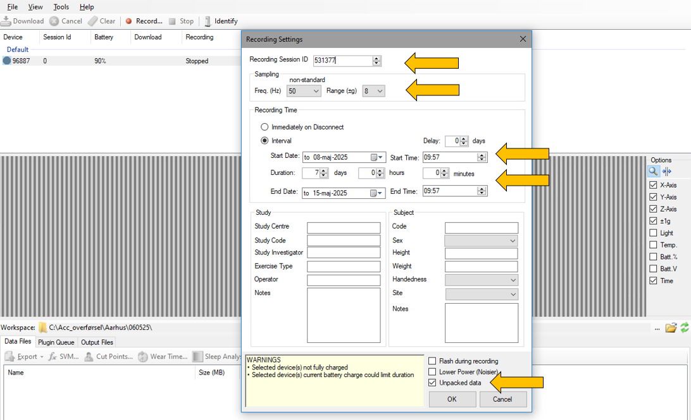

Opsætning af aktivitetsmåler
Download OmGui
Software til opsætning samt download kan findes på følgende hjemmeside: https://github.com/digitalinteraction/openmovement/wiki/AX3-GUI
Opladning af accelerometrene
Påregn opladning minimum en time før og gerne natten over. Accelerometrene skal tidligst oplades 4-5 dage før brug. Når der står 90% med grøn skrift så er det ok.
Accelerometrene indstilles til én person ad gangen.
Start OMGui softwaren
Forbind accelerometeret til computeren vha. USB
Afvent at accelerometeret kommer på Device listen
Hvis der er data på accelerometeret, skal det downloades (se download afsnittet længere nede), hvis det ikke allerede er gjort
Tøm accelerometeret for data ved at markere accelerometeret og tryk ”Clear” og ”ok” til at slette indholdet
Marker accelerometeret i listen
Tryk ”Record” for at opsætte accelerometeret (du får følgende vindue frem)

Indtast borgerens RedCap/Record ID i Recording sessions
Vælg Sampling Freq. (Hz) 50
Vælg Range 8
Vælg Interval under Recording Time
Start date sættes til den dag borgeren skal have det på og tidspunkt svarende til, hvornår testen er overstået.
fx .nov.2024 kl.14:00I unpacked data sættes et flueben – husk dette!
Der klikkes ok.
Gå ind i REDCap projektet “LIVING”
- Find borgeren i REDCap og klik på det besøg der er tale om
Scroll ned til punkterne omkring accelerometer. Her indtastes Accelerometer ID nummer, det nummer der står printet på accelerometeret
fx 18 – 79290TJEK igen at det indtastede accelerometer ID nummer i REDCap passer med det der er på accelerometeret.
Hvis dataindsmalingen er færdig ændres
Form Statusfra Incomplete til Complete. Hvis der mangler at udføres målinger trykkesSave & Exit Form.
- Udlever kuvert til borger med tape og guide til påsætning, skulle accelerometeret falde af i løbet af de 7 dage.
Download data fra accelerometrene
Denne procedure er kun relevant, hvis man sidder med et accelerometer som ikke er renset for data. Kontakt Jonas 24607984 inden du går videre.
Start OMGui softwaren
Forbind accelerometret til computeren ved hjælp af Hub - USB
Afvent at accelerometret kommer på Device listen
Opret mappe til download, hvor data skal placeres. Navngiv mappen efter dataindsamlingstidspunktet.
fx acc_besøg2.Det går hurtigst, hvis du downloader til computeren først og herefter uploader til krypteret harddiskTjek at
Workspaceer korrekt eller vælg mappe til download ved at trykke på de tre prikker…Hvis accelerometrene stadig måler marker accelerometrene og tryk på
StopHvis der er data på accelerometrene marker alle instrumenterne og vælg `Download´
Data er downloadet, når der står
CompleteTjek om filen er downloadet korrekt ved at markere filen i det nederste vindue
data filesog se data i displayetNår du er færdig med at downloade tjek i mappen for download om antal filer stemmer overens med antallet af downloadede accelerometre. Tjek også at filerne er helt downloadede – der må ikke stå
.parti slutningen af den downloadede filDe første cifre i filnavnet er scanner nr., som står på tekstsiden af accelerometeret. Det sidste nr. er borgerens id (session id)
Upload data til mappen
accelerometer_[tidspunkt]på Nextcloud